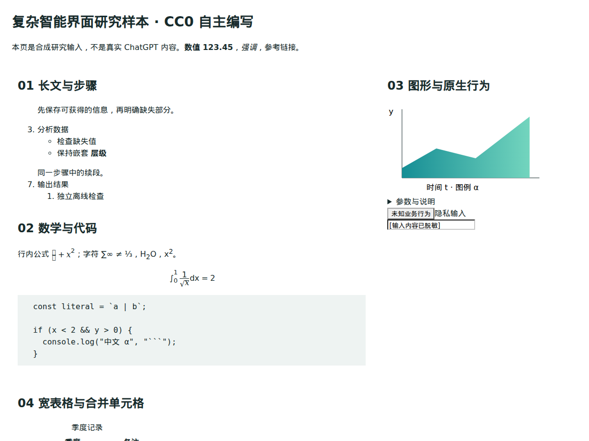
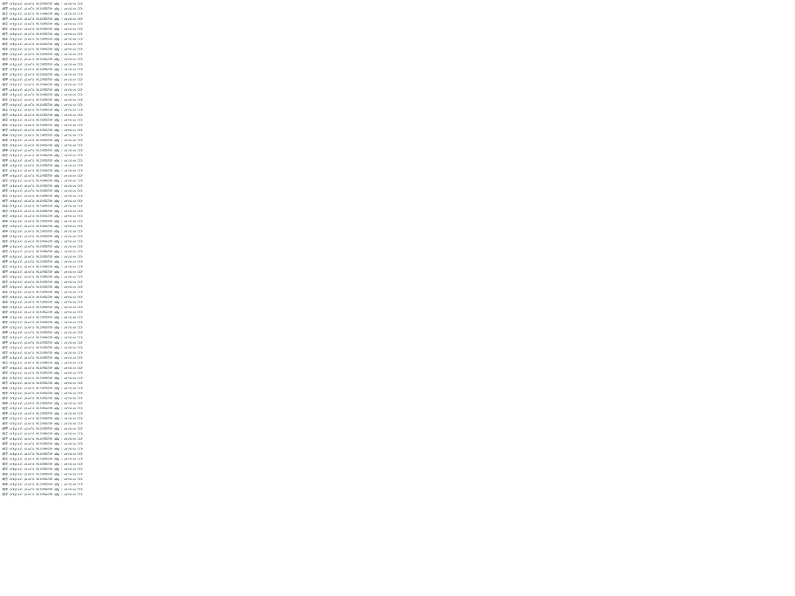
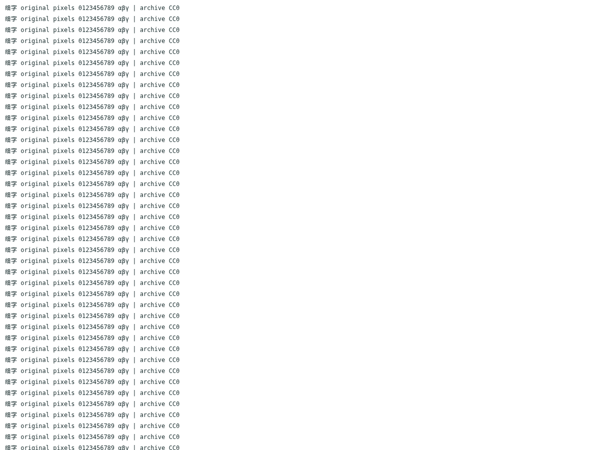

CC0 自编复杂样本，真实 Chromium 输入与导出。不是实际 ChatGPT 用户内容。Windows 与 Obsidian GUI 未验证。
研究报告 · 源页面全图 · 真实富文本剪贴板 · 真实PNG粘贴
改进前HTML / 改进后HTML · 原Markdown / 新Markdown · 独立SVG

实际文件离线打开；完整页面请点击HTML。原标准模式1333×750 / 原尺寸分块3840×2160 · 原测量 / 新测量 · 内存采样范围 · 失败与取消


截图为视口截取；下载HTML含完整原尺寸画面。RGBA比较覆盖整图，不以截图观感替代。